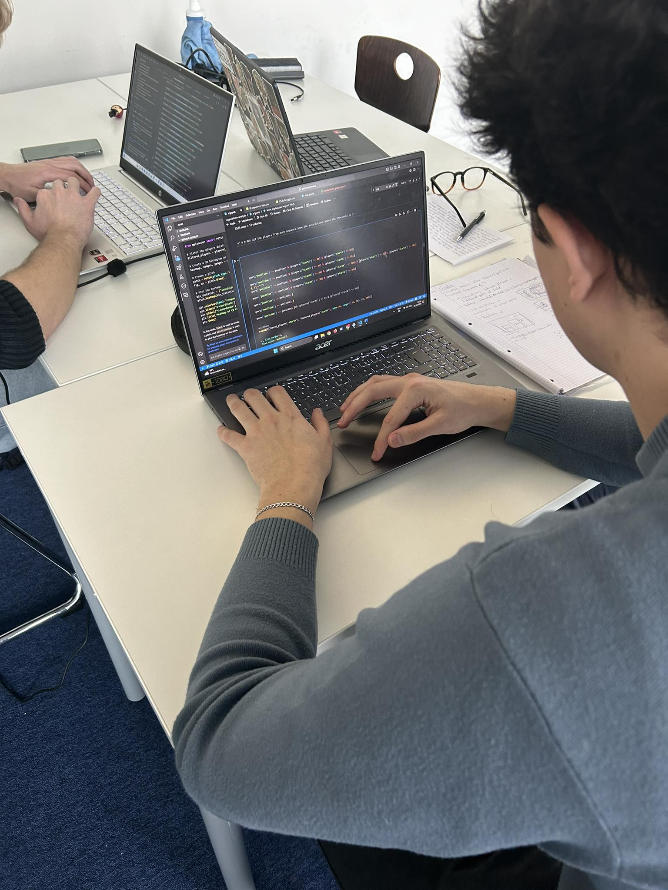
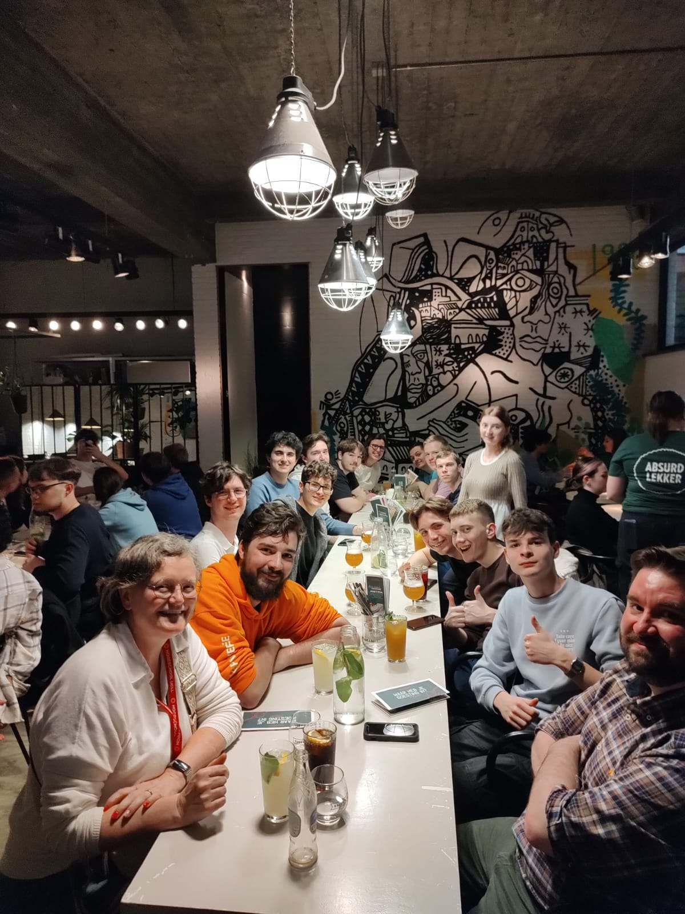
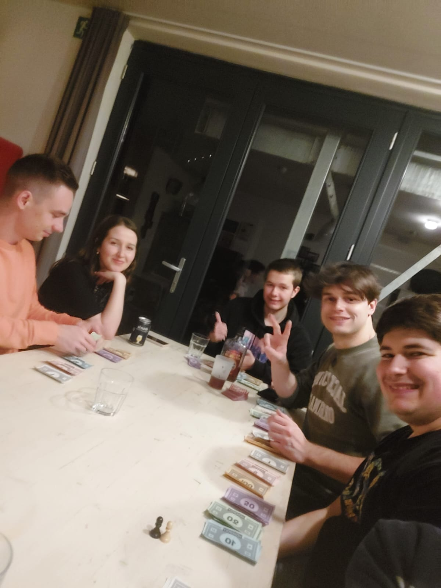

Leuven: A Blend of AI Innovation and Football Passion
Nestled in the heart of Belgium, Leuven is a city where rich history meets technological advancement. Our international project dives deep into the synergy between AI development and the vibrant local soccer culture, uncovering fascinating insights along the way.
Sunday - 17/3 - Luka Vashakmadze
On Sunday, March 17, 2024, our project day in Leuven was a whirlwind of discovery and excitement. We arrived at 4:30 and dove straight into exploring the city, soaking in its vibrant atmosphere and unique charm. But the real highlight awaited us at the stadium...
OH Leuven faced off against Mechelen KV in a crucial football match. The tension was high as both teams fought for their respective goals. OH Leuven needed a win to escape relegation, while Mechelen aimed for a spot in the championship group.
In a nail-biting finale, OH Leuven clinched a thrilling 1-0 victory with a last-minute goal. The stadium erupted with cheers, and we couldn't contain our excitement. After the match, we celebrated the win with delicious kebabs, basking in the joy of the moment. It was an unforgettable day, filled with the thrill of competition and the camaraderie of shared triumph.
Monday - 18/3 - Rodrigo de Anda Novoa
As we commenced our international project in Leuven, the day began with a simple breakfast at the hostel. Following this, we proceeded to the university, taking note of the city's recent success, which had left an air of optimism lingering throughout...
Upon arrival at the university campus via bus, we were struck by its vastness. The day unfolded with an introductory session outlining our tasks and receiving guidance from local staff members. A surprise lunch provided an unexpected break before we delved into the project work. As we collaborated with our team members, we gradually familiarized ourselves with one another. Later in the day, we gathered for a meal featuring dishes from various regions represented in the project, providing an opportunity for cultural exchange and bonding among participants.

Tuesday - 19/3 - Serafim Ciobanu
Today was a pretty eventful day. We got some extra hours to dive into our work, which was great because we made some good progress. The highlight, though, was having a visit from an IBM Generative AI specialist...
They shared some super cool insights into how Generative AI works and gave us tips on how to enhance our projects using it. After soaking up all that knowledge, we got back to work fueled with new ideas. Later, we took a quick tour of Leuven with our mentors, checking out some of the town's hidden gems and picturesque spots. It was a refreshing break and a nice way to bond with the team.
To wrap up the day on a high note, we all headed to a local restaurant together. We enjoyed a delicious dinner, shared laughs, and just had a great time bonding outside of work. Overall, it was a productive yet enjoyable day.

Thursday - 21/3 - Jason Van Hootegem
Since this was the last day before the big presentation, we started the day with an interactive lecture on how to pitch. This lecture provided us with a lot of tips that proved helpful during the presentation. After the lecture, we didn’t waste any time and continued working on our project since we still had a lot to finish before Friday...
However, our productivity took a hit post-lunch as half of our team had to attend another lecture at UCLL. Despite this setback, we made significant progress over the next 2-3 hours. When the UCLL students came back, we made the finishing touches on the project and were happy with the end result. At 7:00 p.m., we had a farewell dinner with all the international students and buddies from UCLL at restaurant Domus. After dinner, we went to grab some ice cream for dessert before returning to the hostel. There, I played poker with the other students for some time before heading to bed to get some rest for the final day.

Friday - 22/3 - Seppe van de Broek
On the last day of the project, each team presented their solutions for their respective cases to the OHL intern and experts in the field. After every team did their presentation, the experts selected the team with the best and most relevant solution for each case...
These three teams, one for each case, then presented their solutions in front of everyone in a large room. After the presentations, everyone voted on which of the three teams had the best solution, and that team was declared the winner. The winning team received a cash prize and a signed shirt from the OHL player who scored the winning goal against KV Mechelen earlier this week. To conclude the week, the organization provided a "Frietkraam" where everyone could enjoy fries and a "frikandel." All in all, it was an amazing experience.